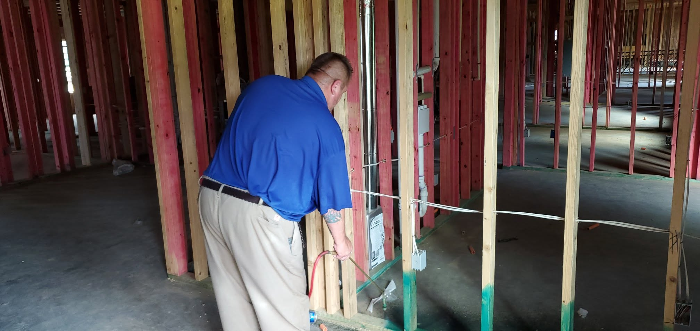
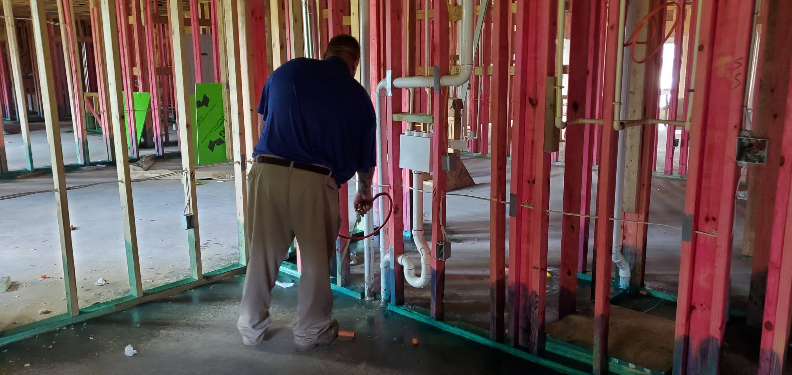
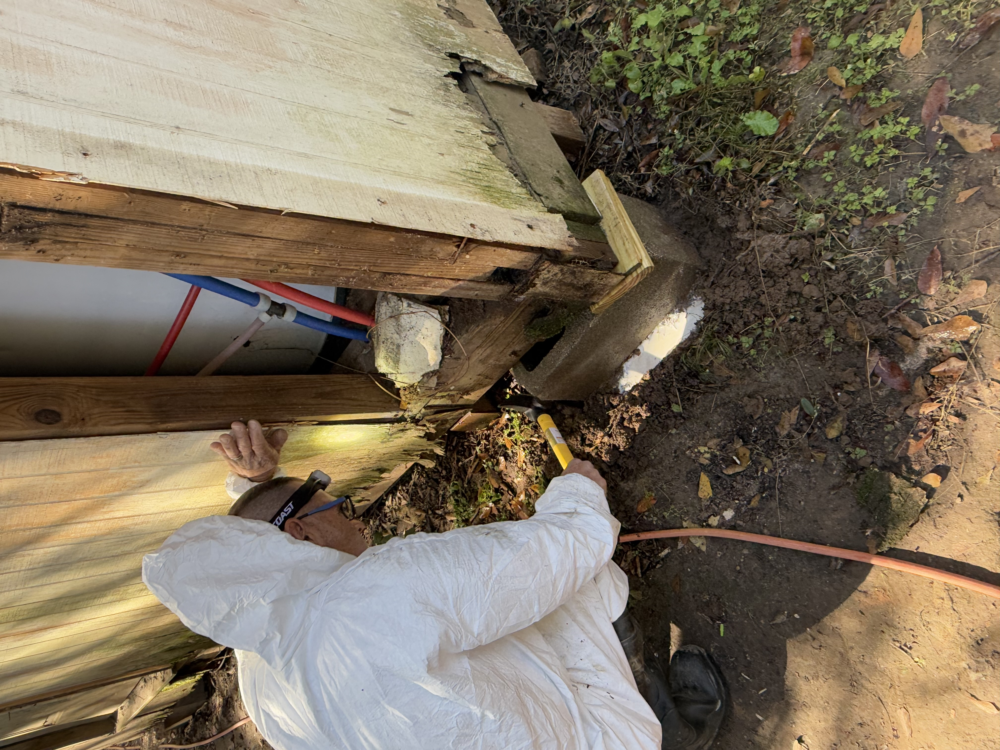
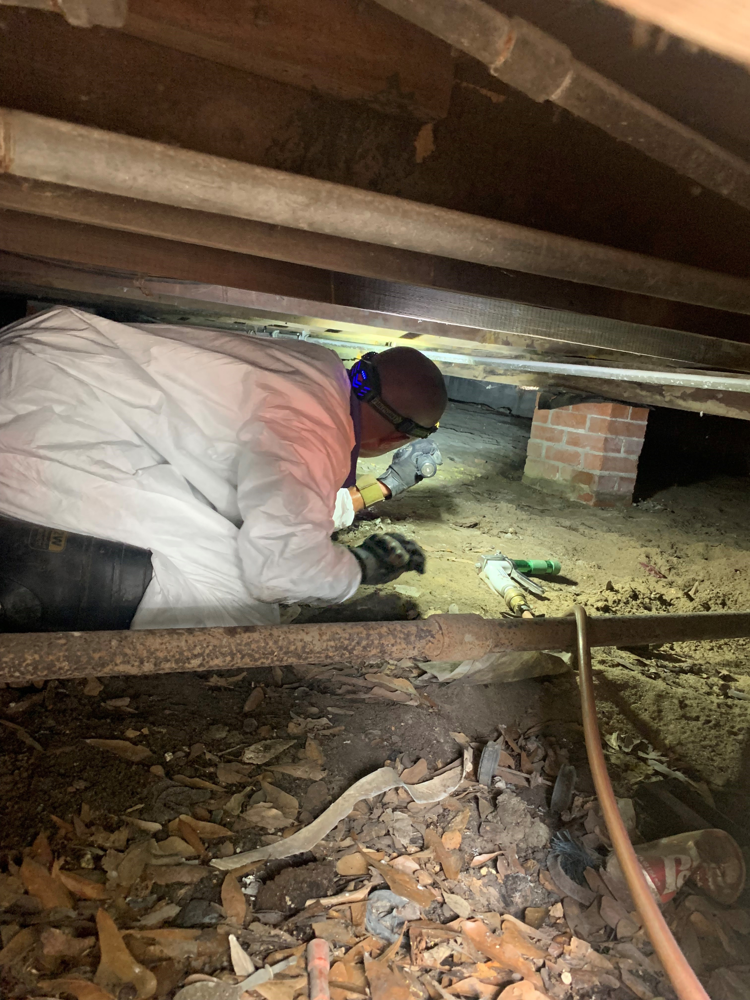

Termites cause more damage to homes each year than fire and storms combined — and most of it happens out of sight. UltraGuard Premium pairs your pest control with a fully baited termite station system around your home, backed by a lifetime warranty.
Subterranean termites live in colonies in the soil and travel up into your home through small cracks in the foundation or pencil-thin mud tubes they build across concrete, brick, and crawl spaces. They're drawn to a few specific conditions:
Leaky faucets, poor drainage, and damp crawl spaces are a welcome mat for termites.
Fencing, deck posts, and siding touching the ground give termites a direct path inside.
Wood, mulch, cardboard, and paper are all food sources termites will seek out.
Crawl spaces, wall voids, and other quiet spots let colonies grow for years unnoticed.

Termites feed on the wood framing inside your walls and ceilings, not the surface you can see — which means by the time damage shows up, it's often already extensive. The photo here is real damage our team found hidden above a door frame during a routine inspection.
Damage builds behind walls, under floors, and in crawl spaces long before it's visible.
Most policies exclude termite damage, making prevention far cheaper than repair.
Regular monitoring is the best way to catch activity before it becomes structural.
Once a year, mature termite colonies send out swarmers — winged reproductive termites — to leave the nest and start new colonies elsewhere. If you've spotted a swarm in or around your home, here's the good news: it does not automatically mean you have an active infestation inside your house. Swarmers are often just passing through, looking for a new place to settle.
That said, seeing swarmers is exactly the kind of thing worth checking out. A free inspection gives you real peace of mind either way — and if there is early activity, catching it now is a lot easier (and cheaper) than dealing with it later.
Building a new home or addition? The best time to protect against termites is before the walls ever close up. Borate treatment is applied directly to exposed framing during construction, creating long-term, built-in protection that's impossible to add later without opening walls back up.


Pest control plus complete termite protection, in one plan.
Warranty remains valid for as long as your UltraGuard Premium plan payments are kept current and annual servicing is completed.


